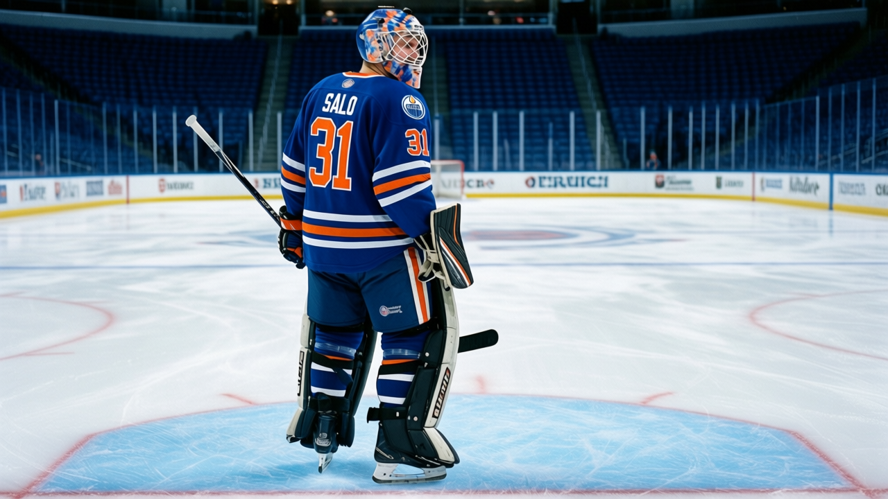

THE $3.50 MILLION MAN WHO WANTS OUT: Edmonton's goalie outranks the Hart winner on the cap sheet
Morale at 74. Four years left. The highest-paid player on the cheapest team in hockey is also the unhappiest man on his own roster.
 Mickey "The Mick" DonnellyColumnist, ex-goalie · The Penalty Box
Mickey "The Mick" DonnellyColumnist, ex-goalie · The Penalty Box
 Tommy Salo81 makes $3.50 million.
Tommy Salo81 makes $3.50 million.  Ryan Smyth79 won the Hart Trophy last season. Smyth makes $2.50 million with 1 year left. Salo has 4 years left. The goalie is the highest-paid player on a roster that spends $36.81 million total.
Ryan Smyth79 won the Hart Trophy last season. Smyth makes $2.50 million with 1 year left. Salo has 4 years left. The goalie is the highest-paid player on a roster that spends $36.81 million total.
That's the  Edmonton Oilers problem, and nobody at Skyreach Centre is going to say it to a microphone.
Edmonton Oilers problem, and nobody at Skyreach Centre is going to say it to a microphone.
Salo sits at 74 on the Bureau's Morale Scale, among the 15 lowest in the league. He's played 25 games, 58.7 minutes a night, 15 wins and 8 losses with 1 shutout. His overall grade is 87. The grade is fine. The man is not fine.
The Edmonton Oilers payroll is second cheapest in the league. The per-point cost is $0.90 million, lowest in hockey. The profit is $22.22 million. Attendance: 14,994 at $79 a seat. On paper, this is the best-run cheap team in the sport.
Then you look at the room. Club average morale: 88.1, fifth worst in the league. Salo is at 74. The highest-paid man in the building is the 9th name on the Bureau's list of the 15 unhappiest players in hockey.
189 minutes of the backup's season
The backup has morale at 89. He's played 4 games, 189 minutes, 2-1 with no shutouts. He's content. The coach gave him 189 minutes over 32 games and went back to the guy who looks like he wants to be on a different continent.
Salo started 25 of 32. That's not a competition. That's a cap sheet telling you who plays.
 Los Angeles Kings head coach Andy Murray said the quiet part this week, talking about his own starter: "Roman's the goalie, we build around him." That's every bench in the league. You don't sit the biggest contract. You don't check the Morale Scale. You put him in because the money already happened and sitting him means admitting it was the wrong money.
Los Angeles Kings head coach Andy Murray said the quiet part this week, talking about his own starter: "Roman's the goalie, we build around him." That's every bench in the league. You don't sit the biggest contract. You don't check the Morale Scale. You put him in because the money already happened and sitting him means admitting it was the wrong money.
The Edmonton Oilers have been outscored 134 to 124. They're 41 points on a 3-game win streak, riding  Mike Comrie78 at 56 points and Smyth at 53. They're winning close ones. And their most expensive player, the $3.50 million man with 4 more years, has a morale score of 74.
Mike Comrie78 at 56 points and Smyth at 53. They're winning close ones. And their most expensive player, the $3.50 million man with 4 more years, has a morale score of 74.
How long does a room hold when the top of the cap sheet is the bottom of the Morale Scale?
Smyth has 1 year. If he doesn't get paid, he walks. If the room is already at 88.1 average and the Hart winner walks, what happens to a club that's already 5th-lowest in the league's happiness rankings and outscored on the season? The profit number says this franchise is healthy. The Morale Scale says it's rotting from the top down.
Four years of Tommy Salo at $3.50 million is the kind of anchor that turns "cheap" into "desperate."